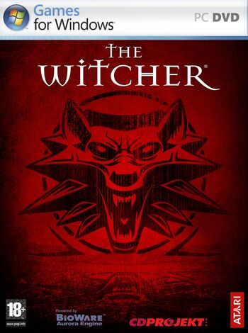

The Witcher is a role-playing video game made strictly for PC. The game was developed by CD Projekt RED and published by Atari. The Game is Based on the series of Fantasy Books Written by Polish Author Andrzej Sapkowski the game utilizes BioWare's proprietary Aurora Engine and was released in October 2007. An enhanced edition of the game, containing among other things the editor and two new adventures: The Price of Neutrality premium module and Side Effects premium module, was released in September 2008.
In the first 10 months following its release, the game sold 800,000 copies worldwide. A console version using an entirely new engine and combat system, titled The Witcher: Rise of the White Wolf, was planned for release in Fall 2009, but development was suspended indefinitely on May 6, 2009.
The Game is set after the events of the books and are not officialy considered as cannon to the novels.
Buy The Witcher on Steam Here
The Witcher Box art